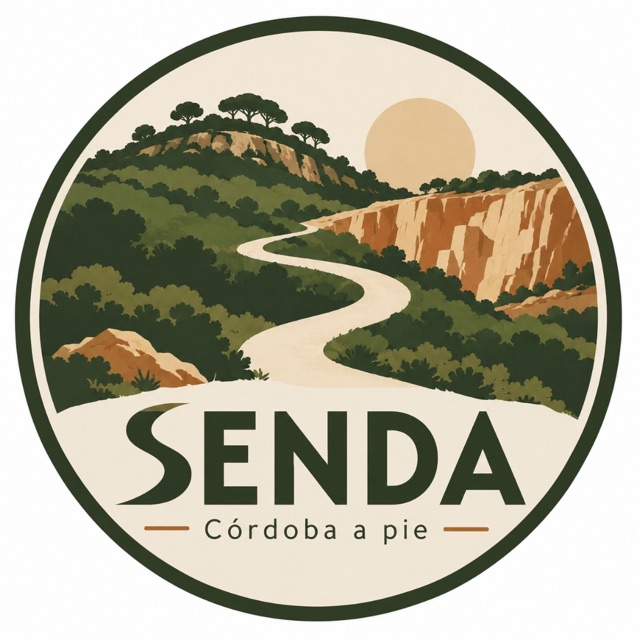
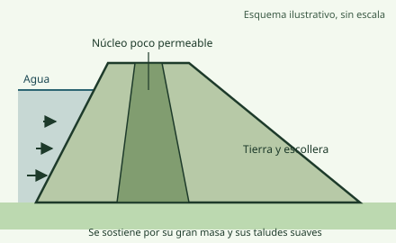
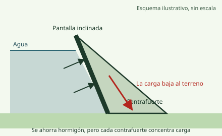

Ruta histórica a reconocer · Almodóvar del Río (Córdoba)
Presa, peces, estaciones y retos para familias en el embalse de La Breña. Ficha en borrador: el itinerario está pendiente de reconocer.

Borrador para revisión. Datos consultados el 28/10/2026. Esta ficha no es una guía de navegación y no incluye trazado ni datos actuales de la ruta: están pendientes de la salida de reconocimiento.
Ruta histórica a reconocer
Esta ruta procede de una guía de senderismo de 1999, anterior a la presa actual. El embalse nuevo cubre parte del valle, así que el itinerario original puede haber cambiado o no ser transitable. Hasta que lo reconozcamos y grabemos un track propio, esta ficha no da distancia, desnivel ni tiempo verificados.
DistanciaPendientePendiente de verificar Se medirá con un GPX propio.
TiempoPendientePendiente de verificar Se medirá en la salida de reconocimiento.
DesnivelPendientePendiente de verificar Necesita un GPX con altitudes.
DificultadPor determinarPendiente de verificar Se fijará tras reconocer el itinerario.
Tipo de recorridoPor determinarPendiente de verificar Ida y vuelta, circular o lineal.
Con perroCon precauciónCon correa; sin perros en la zona de baño en temporada Fuente oficial[9]
AguaSin fuente verificadaLleva toda el agua; no bebas del embalse ni dejes beber al perro sin comprobar los avisos Conocimiento general
TrazadoPendienteSin GPX propio no se muestra ningún trazado.
Seguridad antes de salir
RecomendaciónEsta página no es una guía de navegación; confirma accesos, estado del camino y propiedad del terreno antes de salir.Conocimiento general
En verano evita las horas de calor; del 1 de junio al 15 de octubre rige la época de peligro alto de incendios.Fuente oficial[17]
RecomendaciónEn otoño e invierno hay caza en el parque; consulta antes de salir y lleva ropa visible.Fuente oficial[16]
Lo que sabemos hoy
El embalse actual es el de La Breña II, una presa nueva cuyo vaso engloba al de la presa antigua.Fuente oficial[2, 3]
El nuevo embalse inunda tramos del arroyo Cabrilla y del Guadiato, que forman sus colas.Fuente oficial[2]
Parte del embalse está dentro del Parque Natural Sierra de Hornachuelos, zona ZEC y ZEPA.Fuente oficial[2, 14]
Lo que falta por comprobar
Si el itinerario histórico sigue existiendo o queda parcialmente bajo el agua.Pendiente de verificar
El punto de salida, el aparcamiento y el estado de la carretera junto al embalse.Pendiente de verificar
Cancelas, vallas y propiedad de los terrenos que atraviesa.Pendiente de verificar
La distancia, el desnivel y el tiempo reales con un track propio.Pendiente de verificar
Según una guía turística, se llega a la presa por un desvío de la A-431 en el km 24, a la altura de Almodóvar del Río, y unos 3 km de subida.Fuente secundaria[19]
El proyecto de obras accesorias prevé cancelas que limitan el acceso a la coronación y a las galerías; no consta si se puede acceder hoy.Fuente oficial[6]
Aparcamiento, estado de la carretera junto al embalse y transporte público.Pendiente de verificar
La víspera, mira el estado del embalse y los avisos del parque (incendios y caza).Conocimiento general
Elige la hora según la estación; en verano, sal con el amanecer.Conocimiento general
Avisa a alguien de tu itinerario y comprueba que el móvil tiene batería.Conocimiento general
En esta primera salida graba un track y anota accesos, aparcamiento, cancelas y el estado del camino.Conocimiento general
Variante más corta o circular de esta ruta.Pendiente de verificar
La Junta de Andalucía señala como senderos del Parque Natural Los Ángeles, Guadalora y Bembézar.Fuente oficial[16]
RecomendaciónAntes de ir, consulta la información del parque en la Ventana del Visitante de la Junta.Fuente oficial[16]
Esta calculadora necesita JavaScript. Fórmulas: tiempo = distancia ÷ ritmo; pasos = distancia ÷ longitud del paso; energía potencial = masa × 9,81 × desnivel.
Mapa y perfil
El mapa solo muestra puntos con coordenadas de una fuente oficial o de un GPS propio. Hasta la salida de reconocimiento no hay trazado: preferimos un mapa casi vacío a uno inventado.
Mapa
Pendiente de verificar Trazado pendiente de verificación: no se muestra ningún recorrido.
Capas del mapa: Ruta, Puntos de interés, Patrimonio, Naturaleza, Peligros.
Al cargar el mapa, tu navegador pide las imágenes a OpenStreetMap y, si eliges la ortofoto, al Instituto Geográfico Nacional. Hasta entonces no se contacta con ningún servidor externo.
Puntos del mapa (versión en texto)
Aún no hay puntos verificados: ninguna coordenada procede todavía de una fuente oficial ni de un GPS propio.
Perfil
Perfil pendiente: se dibujará cuando exista un GPX propio con altitudes validadas. Pendiente de verificar
La presa
Una presa es un muro que aguanta un empuje enorme sin moverse. Aquí verás cuánto empuja el agua, cómo se sostiene una presa de gravedad y en qué se diferencia La Breña II de La Breña I.
Datos de La Breña II
Tipo de presa
Gravedad de hormigón compactado con rodillo (HCR), de planta recta Fuente oficial[3, 2]
Altura sobre cimientos
124 m Fuente técnica[3] Otra base de datos da 119 m. No se ha podido aclarar a qué cota se refiere cada cifra.
179,00 m y 184,00 m sobre el nivel del mar Fuente oficial[6]
Capacidad del embalse
823,38 hm³ de capacidad total · 817 hm³ útiles · 850 hm³ en el proyecto Fuente oficial[3, 5, 2] Son tres magnitudes distintas (total, útil y de proyecto), no una discrepancia.
Aliviadero
Central sobre el cauce, cuatro vanos de 13,5 m con perfil escalonado (escalones de 1,20 m) Fuente técnica[4]
Avenida de proyecto
Periodo de retorno de 1000 años, laminada hasta 705 m³/s Fuente técnica[4]
Para qué sirve
Regular el Guadalquivir medio, riego y laminación de avenidas; con central de bombeo y turbinado Fuente oficial[2, 5]
Dónde está
Río Guadiato, término de Almodóvar del Río (Córdoba), cerca de su desembocadura en el Guadalquivir Fuente oficial[2]
Parte del Parque Natural cubierta por el embalse (cifra de 1997)
626,25 ha del Parque Natural Sierra de Hornachuelos Fuente oficial[2]
Dos presas, un mismo río
Dos presas distintas en el mismo río
Tema
La Breña I (antigua)
La Breña II (nueva)
Certeza
Cuándo se construyó
Entre 1931 y 1935
Proyecto aprobado en 2005; obra entre 2005 y 2009 aproximadamente
Este laboratorio necesita JavaScript. Mientras tanto, la tabla de valores de referencia contiene lo esencial.
Valores de referencia (agua dulce)
Presión en el fondo y fuerza por metro de ancho de un muro vertical
Profundidad
Presión en el fondo
Fuerza por metro de ancho
Altura de la resultante
10 m
98,1 kPa
490,5 kN/m
3,3 m
20 m
196,2 kPa
1 962,0 kN/m
6,7 m
30 m
294,3 kPa
4 414,5 kN/m
10,0 m
40 m
392,4 kPa
7 848,0 kN/m
13,3 m
60 m
588,6 kPa
17 658,0 kN/m
20,0 m
100 m
981,0 kPa
49 050,0 kN/m
33,3 m
Cálculo con p = ρ·g·h y F = ½·ρ·g·H², con ρ = 1000 kg/m³ y g = 9,81 m/s². Conocimiento general
Cómo funciona
Cuánto empuja el agua
La presión que ejerce el agua aumenta con la profundidad: p = ρ·g·h. Si la profundidad se duplica, la presión se duplica. Sobre un muro vertical la carga tiene forma de triángulo: es cero en la superficie y máxima en el fondo. La fuerza total por cada metro de ancho vale F = ½·ρ·g·H², así que al duplicar la altura del agua la fuerza se multiplica por cuatro, y actúa a un tercio de la altura medido desde el fondo. Conocimiento general
Cómo aguanta una presa de gravedad
Aguanta con su propio peso. El peso del hormigón y el empuje del agua se combinan en una fuerza resultante que debe caer dentro de la base para que la presa no vuelque, y la fricción con la roca de cimentación impide que deslice. Por eso su sección es casi un triángulo: ancha abajo, donde más empuja el agua, y estrecha arriba. Conocimiento general
Qué es el hormigón compactado con rodillo
Es un hormigón muy seco que se extiende en capas y se compacta con rodillos vibrantes, como si se construyera una carretera muy gruesa. Permite levantar presas de gravedad con rapidez. Conocimiento general
Presión del agua no es lo mismo que esfuerzo en la presa
La presión es la carga que el agua aplica sobre el paramento. Los esfuerzos internos son la respuesta del hormigón a esa carga y a su propio peso. Los diagramas de esta página muestran la carga, no los esfuerzos reales de La Breña II, que requieren un cálculo estructural. Conocimiento general
Cómo ayuda frente a las avenidas
Un embalse almacena temporalmente parte del agua de una crecida y la libera más despacio. Es la laminación. En el proyecto de La Breña II, una avenida que se espera una vez cada mil años queda reducida a un máximo de 705 m³/s. Fuente técnica[4]
Por qué el aliviadero tiene escalones
Cuando el agua cae por un aliviadero llega con mucha energía. Los escalones rompen la corriente y disipan parte de esa energía antes de que el agua llegue al pie de la presa. El diseño de La Breña II se ensayó con un modelo a escala 1/45 en el CEDEX. Fuente técnica[4]
Transmite buena parte del empuje a las laderas, porque su forma curva trabaja a compresión como un arco.
Forma
Planta curva y paredes delgadas.
Se elige cuando
El valle es estrecho y las laderas son de roca muy resistente.
Conocimiento general

Esquema ilustrativo, sin escala.
Cómo resiste
Con su enorme masa de tierra o escollera, que se aguanta sola por su pendiente; un núcleo poco permeable frena las filtraciones.
Forma
Sección trapezoidal muy ancha, con taludes suaves.
Se elige cuando
La cimentación es menos resistente o hay abundancia de material cerca de la obra.
Conocimiento general

Esquema ilustrativo, sin escala.
Cómo resiste
Una pantalla inclinada recibe el empuje y lo transmite a contrafuertes que lo llevan al terreno.
Forma
Pantalla delgada apoyada en muros triangulares separados.
Se elige cuando
Interesa ahorrar hormigón y la cimentación aguanta cargas concentradas.
Conocimiento general
Los datos técnicos proceden de fuentes públicas citadas; el nivel de llenado cambia a diario (consulta el informe de la CHG).
No hay fuente que explique por qué se eligió esta tipología en este emplazamiento, así que no lo afirmamos.
Nivel de llenado actual: consulta el informe de la Confederación Hidrográfica del Guadalquivir [8].
Vida bajo el agua
Un embalse es un ecosistema nuevo, y también la puerta por la que pueden entrar especies que no son de aquí. Separamos lo que hay constancia de que vive en La Breña de lo que solo es esperable, y no mezclamos una cosa con otra: no existe un inventario publicado de los peces del embalse.
Documentadas en el embalse
Hay constancia oficial de su presencia en La Breña II; en algunos casos es indirecta y se indica en cada ficha.
Perca americana (black bass)
Micropterus salmoides
Invasora catalogada
Presencia
El embalse de La Breña II figura por su nombre entre las aguas donde ya estaba presente. Fuente oficial[12]
Estatus legal
Incluida en el Catálogo español de especies exóticas invasoras. Fuente oficial[13]
Cómo reconocerla y qué consecuencias tiene
Cómo reconocerla
Boca grande, con la mandíbula que llega más allá del ojo, y una banda lateral oscura. Conocimiento general
Consecuencias
Depreda sobre peces y anfibios y desplaza a las especies autóctonas. Conocimiento general
Lucio
Esox lucius
Invasora catalogada
Presencia
El embalse de La Breña II figura por su nombre en la lista de aguas donde ya estaba presente. Fuente oficial[12]
Estatus legal
Incluido en el Catálogo español de especies exóticas invasoras. Fuente oficial[13]
Cómo reconocerla y qué consecuencias tiene
Cómo reconocerla
Hocico alargado en forma de pico de pato y boca con muchos dientes. Conocimiento general
Consecuencias
Depredador de talla grande que reduce las poblaciones de peces autóctonos. Conocimiento general
Carpa común
Cyprinus carpio
Invasora catalogada
Presencia
La norma de pesca la da por presente en las aguas continentales andaluzas; no la cita por el nombre del embalse. Es una inferencia. Fuente oficial[12]
Estatus legal
Incluida en el Catálogo español de especies exóticas invasoras; el propio texto anota que su exclusión fue declarada nula. Fuente oficial[13]
Cómo reconocerla y qué consecuencias tiene
Cómo reconocerla
Dos pares de barbillas junto a la boca y una aleta dorsal larga. Conocimiento general
Consecuencias
Al remover el fondo en busca de comida enturbia el agua y daña la vegetación acuática. Conocimiento general
Barbo (probablemente barbo gitano)
Luciobarbus sp. (probablemente L. sclateri)
Autóctona
Presencia
La Orden de pesca de 2023 incluye La Breña II entre los embalses donde se puede retener barbo en concursos, lo que implica que hay barbo. La especie exacta no está confirmada. Fuente oficial[11]
Cómo reconocerla y qué consecuencias tiene
Cómo reconocerla
Cuerpo robusto y cuatro barbillas cortas junto a la boca. Conocimiento general
Consecuencias
Es una especie autóctona; la pesca de barbos es de captura y suelta. Fuente oficial[11]
Mejillón cebra
Dreissena polymorpha
Invasora catalogadaNo es un pez
Presencia
Detectado en La Breña II en 2015, lo que llevó a confinar las embarcaciones del embalse. La Orden de 2023 sigue incluyendo el embalse y el tramo del Guadiato hasta el Guadalquivir entre las aguas con medidas contra esta especie. Fuente oficial[11, 18]
Estatus legal
Incluido en el Catálogo español de especies exóticas invasoras. Fuente oficial[13]
Cómo reconocerla y qué consecuencias tiene
Cómo reconocerla
Molusco pequeño de concha con rayas, que se fija en grupos a rocas, cuerdas y cascos. Conocimiento general
Consecuencias
Obstruye tuberías y compuertas, filtra el agua en cantidades enormes y transforma el ecosistema. Viaja pegado a barcas, botas y equipos mojados. Conocimiento general
Esperables en la cuenca, sin constancia en el embalse
Viven en el entorno o en la cuenca, pero no hay un registro oficial en La Breña. Las exóticas son especies a vigilar.
Boga de río
Pseudochondrostoma willkommii
Autóctona
Presencia
Citada entre los peces del Parque Natural en la ficha de la Red Natura 2000; no consta que viva en el embalse. Fuente oficial[14]
Cómo reconocerla y qué consecuencias tiene
Cómo reconocerla
Boca en la parte inferior de la cabeza, adaptada a rascar el fondo. Conocimiento general
Consecuencias
Es una especie autóctona; su pesca es de captura y suelta. Fuente oficial[11]
Calandino
Squalius alburnoides
Autóctona
Presencia
Citado entre los peces del Parque Natural en la ficha de la Red Natura 2000; no consta que viva en el embalse. Fuente oficial[14]
Cómo reconocerla y qué consecuencias tiene
Cómo reconocerla
Pez pequeño y plateado, de aspecto parecido al alburno. Conocimiento general
Consecuencias
Es una especie autóctona que sufre con la sequía y con las exóticas. Conocimiento general
Colmilleja
Cobitis paludica
Autóctona
Presencia
Citada entre los peces del Parque Natural en la ficha de la Red Natura 2000; no consta que viva en el embalse. Fuente oficial[14]
Cómo reconocerla y qué consecuencias tiene
Cómo reconocerla
Cuerpo alargado con manchas oscuras en filas y pequeñas barbillas. Conocimiento general
Consecuencias
Depende de arroyos y ríos con fondo limpio; se resiente de la pérdida de hábitat. Conocimiento general
Jarabugo
Anaecypris hispanica
Autóctona
Presencia
Citado entre los peces del Parque Natural en la ficha de la Red Natura 2000; no consta que viva en el embalse. Fuente oficial[14]
Conservación
Figura como «en peligro» en la ficha oficial del Parque Natural. Fuente oficial[14]
Cómo reconocerla y qué consecuencias tiene
Cómo reconocerla
Pez muy pequeño; es difícil verlo y no debe manipularse. Conocimiento general
Consecuencias
Muy vulnerable a las especies exóticas y a la pérdida de arroyos. Conocimiento general
Gambusia
Gambusia holbrooki
Invasora catalogada
Presencia
Especie ampliamente extendida en aguas andaluzas; no consta documentada en La Breña. Fuente secundaria[21]
Estatus legal
Incluida en el Catálogo español de especies exóticas invasoras. Fuente oficial[13]
Cómo reconocerla y qué consecuencias tiene
Cómo reconocerla
Pez diminuto de aspecto parecido a un guppy, que nada junto a la superficie. Conocimiento general
Consecuencias
Se alimenta de huevos y crías de otros peces y anfibios. Conocimiento general
Pez sol
Lepomis gibbosus
Invasora catalogada
Presencia
Esperable en la cuenca; no consta documentado en La Breña. Fuente secundaria[21]
Estatus legal
Incluido en el Catálogo español de especies exóticas invasoras. Fuente oficial[13]
Cómo reconocerla y qué consecuencias tiene
Cómo reconocerla
Cuerpo aplanado y muy colorido, con una mancha oscura en la tapa de las branquias. Conocimiento general
Consecuencias
Come huevos y larvas de peces y anfibios nativos. Conocimiento general
Alburno
Alburnus alburnus
Invasora catalogada
Presencia
Esperable en la cuenca; no consta documentado en La Breña. Fuente secundaria[21]
Estatus legal
Incluido en el Catálogo español de especies exóticas invasoras. Fuente oficial[13]
Cómo reconocerla y qué consecuencias tiene
Cómo reconocerla
Pez plateado y pequeño, de cuerpo esbelto. Conocimiento general
Consecuencias
Compite con los peces autóctonos y puede hibridar con algunos ciprínidos ibéricos. Conocimiento general
Siluro
Silurus glanis
Invasora catalogada
Presencia
Registrado en la cuenca del Guadalquivir, pero no consta en La Breña. Fuente secundaria[21]
Estatus legal
Incluido en el Catálogo español de especies exóticas invasoras. Fuente oficial[13]
Cómo reconocerla y qué consecuencias tiene
Cómo reconocerla
Cabeza ancha, boca enorme y largas barbillas; sin escamas. Conocimiento general
Consecuencias
Es un depredador de gran tamaño que puede alterar toda la comunidad de peces. Conocimiento general
Qué conviene vigilar
Son invasoras catalogadas de las que no tenemos constancia en La Breña; las mencionamos para saber qué mirar.
Cangrejo rojo americano (Procambarus clarkii): invasor catalogado. No hemos encontrado datos de su presencia en La Breña; lo mencionamos para saber qué vigilar.Fuente oficial[13]
Galápago de Florida (Trachemys scripta): invasor catalogado que suele proceder de mascotas abandonadas. No hay datos de presencia en La Breña.Fuente oficial[13]
Jacinto de agua o camalote (Eichhornia crassipes): planta invasora catalogada. No hay datos de presencia en La Breña.Fuente oficial[13]
Cómo evitar que se propaguen
RecomendaciónNunca sueltes peces, tortugas ni plantas de acuario en un río o embalse, ni lo hagas con cebos vivos.Conocimiento general
Al salir de un embalse, vacía el agua de botas, cubos y equipos, límpialos y déjalos secar. La norma andaluza recomienda agua caliente a presión o lejía diluida, vertida en terreno drenante y no al cauce.Fuente oficial[11]
No se pueden usar peces como cebo ni transportarlos vivos si son exóticos.Fuente oficial[11]
Las embarcaciones y los hinchables necesitan autorización y desinfección en los embalses con mejillón cebra.Fuente oficial[11]
La Orden de 2023 restringe la pesca y la navegación en las colas de los ríos Cabrilla y Guadiato del embalse. Pendiente de comprobar las coordenadas exactas.Pendiente de verificar[11]
Juega: ¿qué pasa si alguien suelta un pez?
Mueve el control y comprueba, año a año, qué le ocurre a la población de peces autóctonos cuando entra una especie exótica que crece más deprisa.
Este juego necesita JavaScript. Resumen: si alguien suelta unos pocos peces exóticos que crecen más deprisa y perjudican a los autóctonos, con los años pueden ocupar su sitio.
Naturaleza y estaciones
Qué puede verse
Ningún dato está inventariado en el recorrido: lo que ves procede de fuentes oficiales sobre el Parque Natural. La presencia en la ruta se confirmará en la salida de reconocimiento.
Flora
Encina y dehesa
Presencia estableEn el Parque Natural
La encina es el árbol dominante del parque; forma bosque y dehesa con alcornoque y quejigo. Fuente oficial[14, 16]
Alcornoque
Presencia estableEn el Parque Natural
Su corteza gruesa y corchosa lo distingue; forma parte del bosque del parque junto a la encina y el quejigo. Fuente oficial[14]
Quejigo
Presencia estableEn el Parque Natural
Roble de hoja más ancha que la encina, propio de vaguadas y zonas húmedas. Fuente oficial[14]
Jarales y matorral mediterráneo
Presencia estableEn el Parque Natural
Jara pringosa, jara de estepa, aulaga y palmito cubren los suelos pobres y soleados. Fuente oficial[14]
Bosque de ribera
Presencia estableEn el Parque Natural
Aliso, fresno, sauce y álamo crecen junto a los cauces, donde hay agua todo el año. Fuente oficial[14]
Mamíferos
Ciervo y jabalí
Presencia estableEn el Parque Natural
Son muy abundantes en el parque; se ven mejor al amanecer y al atardecer. Fuente oficial[14, 16]
Nutria
Presencia estableEn el Parque Natural
Vive en ríos y embalses con orillas tranquilas; es discreta y es más fácil encontrar sus señales que verla. Fuente oficial[14]
Gineta y meloncillo
Presencia estableEn el Parque Natural
Carnívoros pequeños y nocturnos; muy difíciles de ver. Fuente oficial[14]
Lince ibérico
No esperableEn la zona
Es un símbolo de Sierra Morena, pero las fuentes oficiales consultadas no confirman presencia estable en La Breña. No lo daremos por visible. Pendiente de verificar
Lobo
No esperableEn el Parque Natural
La ficha oficial lo recoge como presencia ocasional. No es un animal que vayas a ver; si ves rastros, no te acerques. Fuente oficial[14]
Aves
Buitre negro y buitre leonado
Presencia estableEn el Parque Natural
El parque alberga una de las mayores colonias de buitre negro de Andalucía; se les ve planear en las horas centrales del día. Fuente oficial[14, 16]
Águilas real, imperial y perdicera
Presencia ocasionalEn el Parque Natural
Presentes en el parque, no inventariadas en La Breña. Si hay nido cerca, mantén la distancia y no uses reclamos. Fuente oficial[14, 15]
Cigüeña negra
Presencia ocasionalEn el Parque Natural
Ave escasa y esquiva de ríos y embalses tranquilos; observarla es un privilegio y exige distancia. Fuente oficial[14]
Aves acuáticas y de ribera del embalse
Posible, sin confirmarEn el embalse
Es de esperar que haya aves ligadas al agua, pero no hemos encontrado un inventario. Se confirmará en la salida de campo. Pendiente de verificar
Paisaje
Un valle convertido en embalse
Presencia estableEn el embalse
El embalse actual ocupa 626 ha del Parque Natural (cifra de 1997) y recoge el agua del Guadiato y de sus afluentes, como el Cabrilla. Fuente oficial[2]
Una ruta, cuatro estaciones
«Posible según estación» es lo que suele ocurrir en el bosque mediterráneo en esa época; no lo hemos observado en esta ruta.
Primavera
Es la estación más verde y vistosa, con el matorral florecido y la ribera llena de vida. Es también cuando más se mueve la fauna.
Qué observar
Los jarales y el matorral mediterráneo florecen y llenan el monte de color y de olor.Posible según estación
Hay más canto y movimiento de aves, porque es época de cría.Posible según estación
Los arroyos suelen llevar más agua y la ribera está verde.Posible según estación
Fenómenos y avisos
Tras las lluvias el terreno está blando y los arroyos pueden estar crecidos; mira el estado de los cauces antes de cruzarlos.Conocimiento general
Precauciones
RecomendaciónLas garrapatas están muy activas; revisa a los niños y al perro al terminar.Conocimiento general
Si hay un nido de rapaz amenazada cerca, mantén una distancia de referencia de 500 a 1000 m y no uses reclamos para atraer animales.Fuente oficial[15] Texto de información pública del plan; comprobar el decreto aprobado.
Horario
Mañana y primera hora de la tarde; a partir de mayo evita las horas centrales.Conocimiento general
Verano
Es la estación más exigente: calor intenso, poca sombra y riesgo de incendio. Sal temprano y conoce las normas del embalse.
Qué observar
Los animales se acercan al agua al amanecer y al atardecer, que son las mejores horas para observar.Posible según estación
Fenómenos y avisos
Del 1 de junio al 15 de octubre es la época de peligro alto de incendios forestales según el bando municipal de Hornachuelos de 2025; las fechas pueden cambiar cada año.Fuente oficial[17]
Precauciones
No se enciende fuego fuera de las zonas habilitadas.Fuente oficial[15]
La temporada de baño oficial va del 1 de junio al 30 de septiembre; solo se puede bañar en la zona balizada, a más de 100 m de la presa, y no está permitido entrar con animales.Fuente oficial[9]
RecomendaciónComprueba los avisos sanitarios del agua antes de bañarte; la calidad cambia de un año a otro y entre embalses.Fuente oficial[10]
RecomendaciónCalor y golpe de calor: lleva más agua de la que crees necesaria y vuelve si alguien se encuentra mal.Conocimiento general
Horario
Empieza con el amanecer y termina antes de media mañana.Conocimiento general
Otoño
Luz suave y temperaturas amables, pero también temporada de caza. Es la época de las primeras lluvias.
Qué observar
La berrea del ciervo, en septiembre y octubre, es uno de los espectáculos del bosque mediterráneo; se oye más que se ve.Posible según estación
Tras las primeras lluvias aparecen setas; recógelas solo con las normas del parque (cesto, sin remover el suelo).Posible según estación Las normas de recolección figuran en el plan de uso del parque.
Fenómenos y avisos
Las primeras lluvias reactivan arroyos y refrescan el monte tras el verano.Posible según estación
Precauciones
RecomendaciónLa caza es el principal uso económico del parque y suele haber batidas de otoño a invierno. Pregunta en el ayuntamiento o en la Delegación y evita las fincas con carteles de caza.Fuente oficial[16]
Hasta el 15 de octubre sigue la época de peligro alto de incendios.Fuente oficial[17]
Horario
Los días son cortos: calcula el regreso con luz y lleva una linterna.Conocimiento general
Invierno
Días cortos y a veces fríos, con más agua en los arroyos. Buena época para ver aves, siempre con atención al terreno y a la caza.
Qué observar
Es buena época para observar aves invernantes y los cauces con más caudal.Posible según estación
Fenómenos y avisos
Puede haber heladas por la mañana, barro y arroyos crecidos.Posible según estación
Precauciones
RecomendaciónNo cruces un arroyo si baja con fuerza o está turbio; busca otro paso o da la vuelta.Conocimiento general
RecomendaciónLas batidas de caza pueden continuar hasta febrero; consulta antes de salir y lleva ropa visible.Conocimiento general
Horario
Aprovecha las horas centrales del día, que son las más cálidas y luminosas.Conocimiento general
Con perro
Un perro disfruta del campo, pero el calor, el agua, el ganado, la caza y los parásitos pesan más con él. Esto es lo que dice la normativa y lo que aconseja la prudencia, diferenciando una cosa de la otra.
Lo que dice la normativa
En la zona de baño oficial del embalse no está permitido entrar con animales durante la temporada de baño (1 de junio a 30 de septiembre), con excepciones.Fuente oficial[9]
RecomendaciónNo hemos encontrado una norma del Parque Natural que obligue a llevar a los perros atados. Aun así, lleva correa donde haya ganado, caza o fauna.Fuente oficial[15] Se ha leído el texto de información pública del plan, no el decreto aprobado; se confirmará.
Las cancelas de caminos con ganado se dejan cerradas.Fuente oficial[15]
Agua y calor
RecomendaciónNo asumas que hay agua potable en el recorrido; lleva la del perro y la tuya.Conocimiento general
RecomendaciónNo dejes que el perro beba del embalse sin comprobar los avisos sanitarios; el agua puede tener bacterias o cianobacterias según el momento.Conocimiento general[10]
RecomendaciónEn verano evita las horas de más calor y busca sombra; los perros se refrescan peor que las personas.Conocimiento general
Garrapatas, espigas y procesionaria
RecomendaciónRevisa al perro (orejas, axilas, entre los dedos) al terminar y consulta a tu veterinario sobre prevención.Conocimiento general
RecomendaciónLas espigas de gramíneas secas se clavan en orejas, ojos y entre los dedos; revísalas y evita caminar por herbazales secos.Conocimiento general
Si ves pinos con bolsones sedosos, no te acerques con el perro; la procesionaria es peligrosa. No hemos verificado que haya pinares en el recorrido.Pendiente de verificar
Fauna, ganado y caza
RecomendaciónLa caza es el principal uso del parque y hay batidas en otoño e invierno; evita salir con el perro en esos días sin consultar.Fuente oficial[16]
RecomendaciónEl ganado y los animales silvestres se asustan con los perros sueltos; mantén al tuyo cerca y bajo control.Conocimiento general
Para llevar con el perro
Son consejos generales, no una indicación veterinaria: consulta a tu veterinario según tu perro.
Modo explorador
Para niños y niñas de 8 a 13 años, con los adultos de ayudantes. Cinco retos para hacer durante la excursión y un cuestionario para comprobar lo aprendido. Sin pantallas durante el camino: apunta los resultados en la ficha de campo.
Cinco retos
Cinco retos para hacer durante la excursión.
Reto 1
Detectives de árboles
20 min · Material: Un lápiz, la ficha de campo
Busca tres hojas distintas caídas en el suelo y dibújalas en la ficha de campo.
Fíjate en el borde, el tamaño y si la hoja es blanda o dura al tacto.
Mira la corteza del tronco: ¿es lisa, rugosa o corchosa?
Pregunta: ¿Por qué crees que muchas hojas del bosque mediterráneo son pequeñas y duras?
Pista y lo que aprendes
Pista: Piensa en lo que pasa con el agua en verano.
Lo que aprendes: Muchas plantas mediterráneas tienen hojas coriáceas para perder menos agua durante la sequía del verano.
Seguridad: No arranques ramas ni toques plantas que no conozcas.
Reto 2
Minuto de silencio
10 min · Material: Un reloj o contador, la ficha de campo
Guardad el teléfono, sentaos en un sitio tranquilo y callad durante un minuto.
Cada uno apunta cuántos sonidos distintos oye: aves, agua, viento, insectos.
Comparad las listas sin hablar de más.
Pregunta: ¿Cuántos sonidos distintos habéis contado, y de qué tipo son?
Pista y lo que aprendes
Pista: Los cantos de las aves se repiten; intenta reconocer un patrón.
Lo que aprendes: Escuchar con atención revela mucha más vida de la que se ve; algunas aves se identifican antes por el canto que por la vista.
Seguridad: Mantened la distancia con cualquier ave que esté en un nido y no uséis reclamos.
Reto 3
Rastro de huellas
20 min · Material: Un lápiz, la ficha de campo
Busca huellas en el barro o en la orilla de un camino y dibuja su forma.
Compárala con la de las patas de vuestro perro: ¿tiene uñas marcadas? ¿es redonda o alargada?
Anota dónde la has encontrado y cuántas hay seguidas.
Pregunta: ¿Qué animal crees que dejó esas huellas, y hacia dónde iba?
Pista y lo que aprendes
Pista: Si ves dos pezuñas con forma de media luna, piensa en un animal de pezuña, no de garra.
Lo que aprendes: Las huellas cuentan quién pasó, por dónde y si iba deprisa o despacio.
Seguridad: Si ves rastros de algún animal que no reconoces, no te acerques a seguirlos.
Reto 4
Cómo trabaja una presa
15 min · Material: La página de la ruta
Abre el laboratorio de presión de la sección La presa y mueve la profundidad.
Apunta la presión a 10 m, 20 m y 30 m.
Observa cómo cambia la fuerza total y a qué altura actúa.
Pregunta: ¿Por qué una presa de gravedad es más ancha en la base que en la coronación?
Pista y lo que aprendes
Pista: Mira dónde es mayor la presión del agua.
Lo que aprendes: La presión crece con la profundidad, así que el muro necesita ser más grueso abajo y su peso ayuda a sostenerlo.
Seguridad: No te acerques al borde de la presa ni al borde del agua sin un adulto.
Reto 5
Detectives de invasoras
15 min · Material: Botas y mochila, la ficha de campo
Antes de volver a casa, mirad las botas, la mochila y las patas del perro: ¿llevan barro, semillas o agua del embalse?
Limpiad lo que se pueda y dejadlo secar antes de entrar en otro río o embalse.
Decidid en familia qué haríais si alguien quisiera soltar un pez de acuario en un río.
Pregunta: ¿Por qué no se debe soltar nunca un animal de compañía en el campo?
Pista y lo que aprendes
Pista: Piensa en quién se come a quién cuando llega un depredador nuevo.
Lo que aprendes: Una sola especie exótica puede alterar un ecosistema; por eso se limpia el equipo y no se sueltan animales ni plantas.
Seguridad: No cojas animales ni plantas acuáticas; limpia el equipo lejos del agua.
Si el navegador lo permite, recordará en este dispositivo qué retos has marcado. No se envía nada a ningún sitio.
Cuestionario
11 preguntas de matemáticas, física, ingeniería y naturaleza, con explicación. No se guarda nada ni se envía ninguna respuesta.
¿Qué presión ejerce el agua dulce a 30 m de profundidad (sin contar la presión de la atmósfera)?Física
a) Unos 0,03 MPa
b) Unos 0,29 MPa
c) Unos 3 MPa
Ver la respuesta
Respuesta: b) Unos 0,29 MPa.
p = ρ·g·h = 1000 · 9,81 · 30 ≈ 294 000 Pa, que son unos 0,29 MPa. Es un modelo sencillo, no el nivel real del embalse. Conocimiento general
Si la profundidad del agua se duplica, ¿qué ocurre con la presión en el fondo?Física
a) Se duplica
b) Se multiplica por cuatro
c) No cambia
Ver la respuesta
Respuesta: a) Se duplica.
La presión es proporcional a la profundidad. En cambio, la fuerza total sobre el muro depende de la altura al cuadrado. Conocimiento general
Si la altura del agua contra un muro se duplica, ¿cuántas veces aumenta la fuerza total sobre el muro?Matemáticas
a) Dos veces
b) Cuatro veces
c) Ocho veces
Ver la respuesta
Respuesta: b) Cuatro veces.
F = ½·ρ·g·H², así que al duplicar H la fuerza se multiplica por 2², es decir, por cuatro. Conocimiento general
¿A qué altura, medida desde el fondo, actúa la fuerza resultante del agua sobre un muro vertical?Física
a) A la mitad de la altura
b) A un tercio de la altura
c) En la superficie
Ver la respuesta
Respuesta: b) A un tercio de la altura.
La carga tiene forma de triángulo (cero arriba y máxima abajo), y su resultante actúa a un tercio de la altura desde el fondo. Conocimiento general
¿Qué tipo de presa es La Breña II?Ingeniería
a) De arco
b) De materiales sueltos
c) De gravedad de hormigón compactado con rodillo
Ver la respuesta
Respuesta: c) De gravedad de hormigón compactado con rodillo.
Según la ficha técnica de SPANCOLD, es una presa de gravedad de hormigón compactado con rodillo (HCR), de planta recta. Fuente técnica[3]
¿Qué relación hay entre La Breña I y La Breña II?Ingeniería
a) Son el mismo embalse con dos nombres
b) La Breña II es una presa nueva construida aguas abajo de la antigua
c) La Breña I está en otro río
Ver la respuesta
Respuesta: b) La Breña II es una presa nueva construida aguas abajo de la antigua.
La Breña I es la presa antigua (de los años treinta) y La Breña II es una presa nueva construida unos 120 m aguas abajo; el vaso antiguo queda englobado en el nuevo. Fuente secundaria[19, 2]
Has visto un pez de acuario en casa y quieres deshacerte de él. ¿Qué haces?Naturaleza y animales
a) Lo suelto en el embalse más cercano
b) Lo regalo o consulto cómo entregarlo
c) Lo suelto en un arroyo pequeño
Ver la respuesta
Respuesta: b) Lo regalo o consulto cómo entregarlo.
Soltar animales o plantas exóticas puede provocar invasiones biológicas. Nunca se sueltan en el medio natural. Conocimiento general
¿Para qué sirven los escalones del aliviadero de La Breña II?Ingeniería
a) Para decorar la presa
b) Para disipar parte de la energía del agua que cae
c) Para que los peces suban
Ver la respuesta
Respuesta: b) Para disipar parte de la energía del agua que cae.
Los escalones rompen la corriente y disipan energía antes de que el agua llegue al pie de la presa. El diseño se ensayó con un modelo a escala 1/45 en el CEDEX. Fuente técnica[4]
Si caminas 6 km a 3 km/h sin parar, ¿cuánto tiempo tardas?Matemáticas
a) 1 hora
b) 2 horas
c) 3 horas
Ver la respuesta
Respuesta: b) 2 horas.
El tiempo es la distancia dividida entre la velocidad: 6 ÷ 3 = 2 horas. Con paradas, tardarás más. Conocimiento general
Subes 200 m en lugar de 100 m con la misma masa. ¿Cuánta más energía potencial ganas?Física
a) La misma
b) El doble
c) El cuádruple
Ver la respuesta
Respuesta: b) El doble.
La energía potencial es E = m·g·h: es proporcional al desnivel h. Si h se duplica, la energía se duplica. Conocimiento general
Alguien suelta solo tres peces exóticos en un embalse. ¿Qué puede pasar con los años?Naturaleza y animales
a) Nada, son muy pocos
b) Pueden multiplicarse y desplazar a los peces autóctonos
c) Los peces autóctonos los echan enseguida
Ver la respuesta
Respuesta: b) Pueden multiplicarse y desplazar a los peces autóctonos.
Una especie exótica que crece deprisa puede ocupar el sitio de las autóctonas aunque empiece con pocos ejemplares. Por eso nunca se suelta ninguna. Pruébalo en el simulador. Conocimiento general
Patrimonio y curiosidades
El río Cabrilla
El Cabrilla es un curso corto de la Sierra Morena cordobesa que desemboca en el embalse de La Breña, donde se une al Guadiato. El Guadiato, a su vez, es afluente del Guadalquivir.Fuente secundaria[20]
Los documentos oficiales lo llaman unas veces «arroyo de la Cabrilla» y otras «río Cabrilla».Fuente oficial[2]
El embalse actual inunda tramos del Cabrilla y del Guadiato, que forman sus «colas».Fuente oficial[2]
Del valle al embalse
1931–1935Se construye la primera presa de La Breña. Fuente secundaria[19]
1997–1998Se publica la declaración de impacto ambiental de la nueva presa. Fuente oficial[2]
2005–2009Se aprueba el proyecto y se construye La Breña II; las fuentes no coinciden en el año exacto de puesta en servicio. Fuente secundaria[19, 7]
2015Se detecta mejillón cebra y se confinan las embarcaciones en el embalse. Fuente secundaria[18]
2022Una ordenanza municipal regula las zonas de baño del embalse. Fuente oficial[9]
2023La Orden de pesca continental recoge medidas de prevención contra el mejillón cebra para este embalse. Fuente oficial[11]
Curiosidades
Un nombre de monte bravo
En español, una «breña» es un terreno escabroso y cubierto de maleza, lo que encaja con el paisaje de Sierra Morena. Conocimiento general
Un aliviadero con escalera
El aliviadero de La Breña II es una gran escalera por la que desciende el agua de las avenidas. Antes de construirlo, el CEDEX probó el diseño con un modelo a escala 1/45. Fuente técnica[4]
Una crecida que ocurre cada mil años
La avenida de proyecto es la que se espera, en promedio, una vez cada mil años. Con el embalse se reduce a un máximo de 705 m³/s. Fuente técnica[4]
Una central que sube y baja agua
El complejo incluye una instalación de bombeo y turbinado, que permite almacenar energía elevando agua y recuperarla después. Fuente oficial[5]
Después de caminar
Llévate la ficha de campo imprimible: para dibujar, anotar lo que oyes y encuentras, y, para los adultos, recoger los datos que faltan para verificar esta ruta.
Fuentes y verificación
Estado de la ficha: borrador. Verificación sobre el terreno: pendiente. Todo lo que ves procede de documentos consultados el 28/10/2026.
Andar por la Sierra de Córdoba B. Olivares · Acción Ecologista Guadalquivir (1999) · Libro histórico · consultada el 27/10/2026 Antecedente histórico de esta ruta. Esta página no reproduce sus datos, textos, fotografías ni planos.
Situación histórica de embalses (SAIH) Confederación Hidrográfica del Guadalquivir · Oficial · consultada el 28/10/2026 Se enlaza para consultar el nivel actual; no se copian cifras de llenado.
Bando de prevención de incendios forestales 2025 Ayuntamiento de Hornachuelos · Oficial · consultada el 28/10/2026 Fuente municipal; las fechas pueden cambiar cada año. Consultar el bando vigente y el Plan INFOCA.